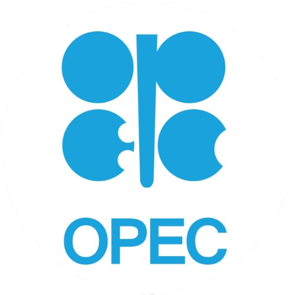
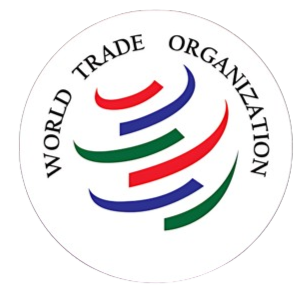
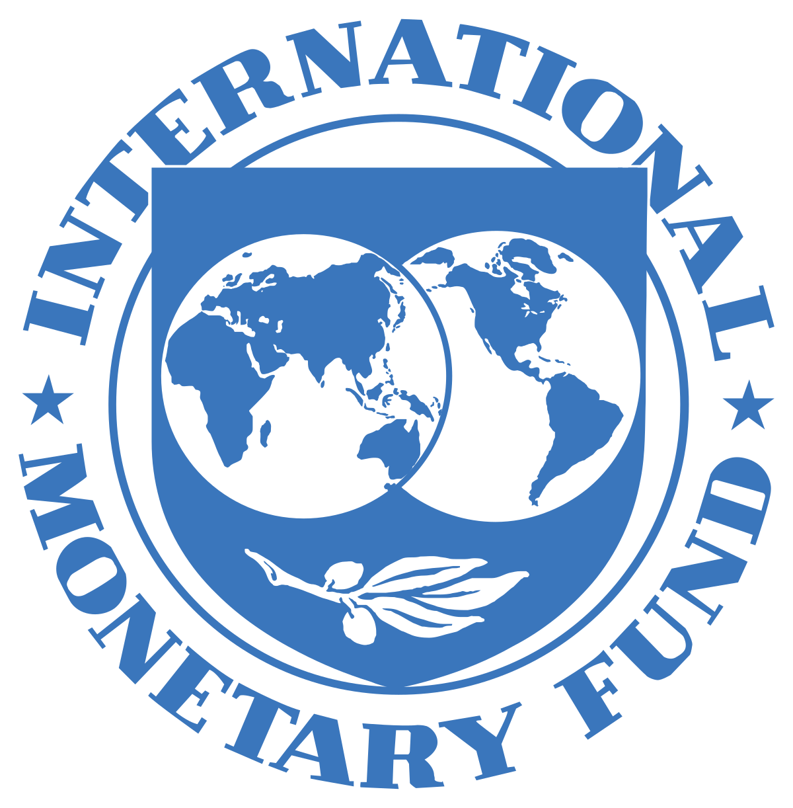
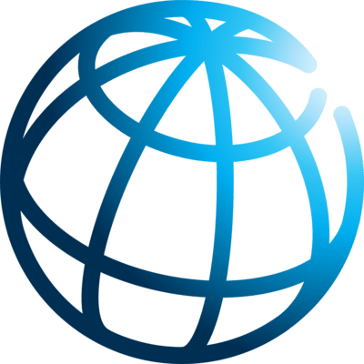
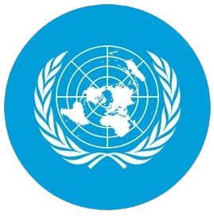

Merupakan kerjasama yang melibatkan beberapa negara tanpa dibatasi area wilayah. Kerjasama multilateral memiliki dua jenis anggota, yaitu anggota utama dan anggota aktif. Anggota utama adalah negara yang memiliki kekuatan menengah. Sedangkan anggota aktif adalah negara kecil yang memiliki kekuatan lebih kecil dan berperan secara terbatas.
Contoh kerjasama multilateral:
Organization of Petroleum Exporting Countries (OPEC)
Organisasi internasional untuk melakukan kerja sama dalam negosiasi terkiat produk, hak, dan konsesi minyak bumi antar negara anggota. OPEC mengendalikan harga minyak mentah di pasar dunia.
World Trade Organization (WTO)
Organisasi Lembaga yang mengatur transaksi perdagangan antar negara anggota. WTO bertujuan untuk kepentingan ekonomi, perdamaian dunia, dan mendorong pemerintahan yang bersih.
International Monetary Fund (IMF)
Organisasi lembaga keuangan internasional yang bekerja sama dengan World Bank. IMF bertugas dalam menangani permasalahan keuangan negara anggota, seperti isu pengangguran, inflasi, depresiasi, stabilitas berbangkan negara, dan lain-lain.
World Bank
Organinasi ini merupakan Lembaga keuangan yang membantu pembangunan negara di sektor keuangan. World Bank atau Bank Dunia memberikan bantuan keuangan pada negara pasca peperangan.
United Nation (UN) atau Persatuan Bangsa Bangsa (PBB)
Organisasi ini beranggotakan seluruh negara di dunia. PBB bertujuan untuk menjalin kerja sama dalam bidang hukum, keamanan, ekonomi, sosial, hak asasi, dan perdamaian negara. Salah satu cara untuk mengatasi tantangan global, PBB membuat atau menetapkan Sustainable Development Goals (SDGs).